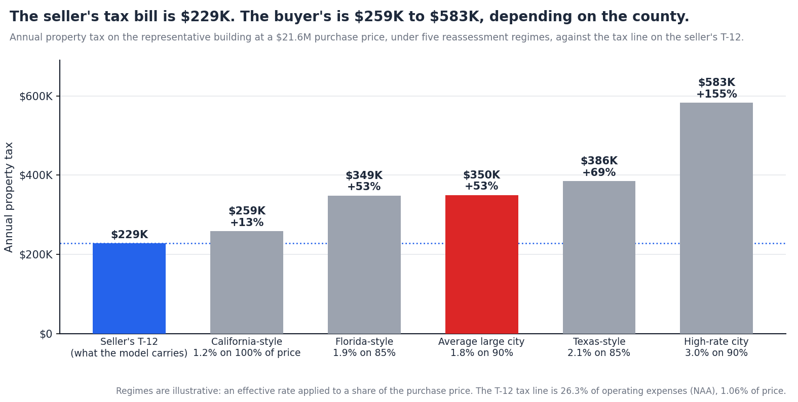
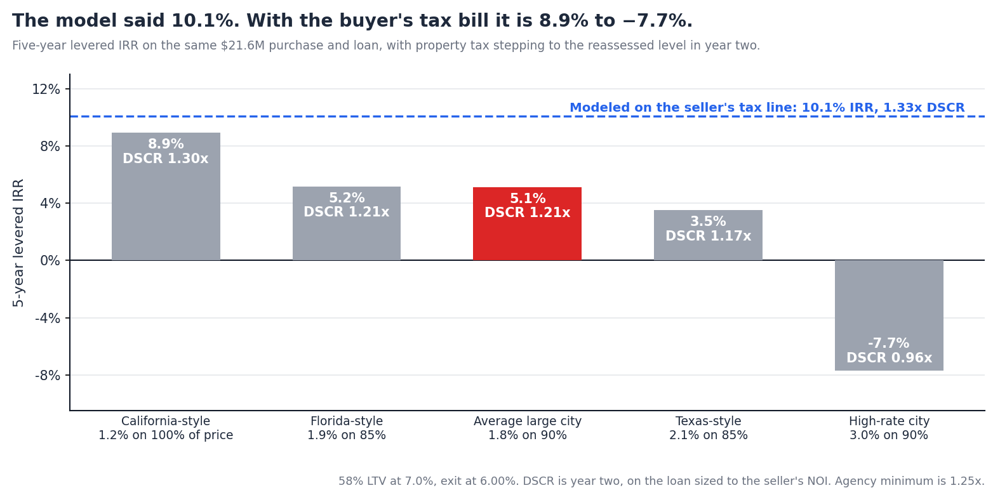

Property Tax Reassessment After a Multifamily Sale, and What It Does to the Deal
Summary. The property tax line on a trailing-twelve statement is the tax on the seller's assessed value. The buyer will pay tax on a different value, set after the sale, by a rule that depends on the state and often the county. In California the assessment resets to the purchase price at closing. In Florida it resets to full market value the following January 1. In Texas every property is reappraised each January whether it sold or not. In Cook County nothing happens until the next triennial cycle. Property tax is about a quarter of operating expenses and eleven cents of every rent dollar, so the difference between the two bills is one of the largest errors a model can carry, and it is knowable before the bid.
We take the representative building from this series, priced at $21.6M with $1.24M of NOI and a $229K tax line on the seller's T-12, and apply five reassessment regimes. Findings:

There is no national rule. The buyer's assessed value depends on whether a sale triggers reassessment, whether annual increases are capped, and how much of the purchase price the assessor is expected to reach.
| Regime | Where | What a sale does | What the buyer should expect |
|---|---|---|---|
| Reset to price at closing | California (Proposition 13) | A change of ownership, including a transfer of more than 50% control of an entity, resets the base to acquisition value. Growth is then capped at 2% a year. | Tax on roughly 100% of price at 1.1% to 1.25%, with a supplemental bill for the stub period. |
| Reset to market next January 1 | Florida | A change of ownership or control removes the non-homestead cap; the property is assessed at just value the following January 1. The cap never applied to school levies. | Practitioners use 80% to 85% of price in South Florida. The seller's capped assessment can be far below it. |
| Annual reappraisal, no sale trigger | Texas | Nothing directly: every property is reappraised to market each January 1. Sale prices are not publicly disclosed, but appraisal districts obtain many of them. | Market value, less whatever a protest wins. The 20% circuit-breaker cap applies only below about $5.3M of value and expires after the 2026 tax year. |
| Fixed cycle, no sale trigger | Cook County, Illinois; Maryland; much of Pennsylvania | Nothing until the next scheduled reassessment: triennial by township in Cook County, every three years in Maryland, irregular in Pennsylvania. | The seller's bill, then a step at the next cycle that uses the sale as evidence. Timing matters as much as size. |
| Annual, sale-informed, paid in arrears | Minnesota (Twin Cities) | The assessor picks up the sale in the next assessment; taxes are payable a year later. | 90% to 95% of price, arriving in year three of the hold. |
Two of these changed this month and next. Florida voters approved Amendment 3 on November 3 with about 62% of the vote. From January 1, 2027 the non-homestead cap on non-school levies falls from 10% a year to 5%, and reassessment on a change of ownership stays. A tighter cap widens the gap between a long-held seller's assessment and the buyer's reset value every year it runs. In Texas, the three-year circuit-breaker pilot under Tax Code section 23.231 ends on December 31, 2026; the 2025 session did not extend it.
Lenders already underwrite the buyer's bill. Fannie Mae's Multifamily Guide, as of the September 28, 2026 edition, sets underwritten real estate taxes at the greatest of the actual future tax bill for a full year, the prior full year's taxes times 103%, or assessed taxes, and says that where a property is subject to a scheduled reassessment or an abatement phase-in, "tax expense should be adjusted appropriately." The lender's NOI is therefore built on the reassessed number. A sponsor who carried the seller's line finds out at sizing.
A quarter of expenses. The National Apartment Association's 2023 survey put property taxes at 26.3% of operating expenses, up 9.7% that year after 5.3% the year before. Its rent-dollar study puts taxes at eleven cents of every dollar of rent. On the representative building, with $869K of operating expenses, that is a $229K tax line: 10.8% of revenue and 1.06% of the $21.6M price.
Rates differ by a factor of eleven. The Lincoln Institute's 50-state study, as summarized by NMHC, puts the effective tax rate on an apartment property in each state's largest city between 0.33% in Honolulu and 3.70% in Detroit. Apartments paid an effective rate 46% higher than the median owner-occupied home in 2025, the widest gap since 2008. For commercial property generally the largest-city average is a little above 1.8%, with Chicago and Detroit near 4%, Houston about 2.1%, and California between 1.1% and 1.25%.
What a 1.06% tax line means. A building paying 1.06% of today's price in a 1.8% jurisdiction is assessed at about 59% of that price. That is ordinary for an asset held through a period of capped or lagging assessments. It is also exactly the gap a sale closes.
Assessments are rising without sales too. New York City's tentative 2026/27 roll raised the market value of Class 2 multifamily property 6.9%, and rental buildings 6.4%. The tax line is not a fixed cost that grows at 3%.
The building: $21.6M at a 5.75% cap, $1.24M of NOI on the seller's T-12, 58% leverage at a 7.0% coupon sized to a 1.25x DSCR, five-year hold, 3% growth on every line, exit at 6.00%. We apply each regime's tax bill from year two.
| Regime (illustrative) | Buyer's tax | Step-up | NOI | Value at 5.75% | Loan at 1.25x |
|---|---|---|---|---|---|
| Seller's T-12, carried forward | $229K | $1.24M | $21.6M | $12.4M | |
| California-style: 1.2% on 100% | $259K | +$31K (+13%) | −2.5% | −$0.5M | −$0.3M |
| Florida-style: 1.9% on 85% | $349K | +$120K (+53%) | −9.7% | −$2.1M | −$1.2M |
| Average large city: 1.8% on 90% | $350K | +$121K (+53%) | −9.8% | −$2.1M | −$1.2M |
| Texas-style: 2.1% on 85% | $386K | +$157K (+69%) | −12.7% | −$2.7M | −$1.6M |
| High-rate city: 3.0% on 90% | $583K | +$355K (+155%) | −28.6% | −$6.2M | −$3.6M |
And what the buyer who carried the seller's line, and borrowed against it, actually gets:
| Regime (illustrative) | Year-2 DSCR | 5-yr levered IRR | Price that earns the modeled IRR |
|---|---|---|---|
| Seller's T-12, carried forward | 1.33x | 10.1% | $21.6M |
| California-style: 1.2% on 100% | 1.30x | 8.9% | $21.1M (−2.3%) |
| Florida-style: 1.9% on 85% | 1.21x | 5.2% | $19.7M (−8.9%) |
| Average large city: 1.8% on 90% | 1.21x | 5.1% | $19.7M (−9.0%) |
| Texas-style: 2.1% on 85% | 1.17x | 3.5% | $19.1M (−11.6%) |
| High-rate city: 3.0% on 90% | 0.96x | −7.7% | $15.9M (−26.2%) |

One dollar of tax is seventeen dollars of value. At a 5.75% cap, each dollar of annual tax capitalizes to $17.40. At a 1.25x DSCR and a 7.0% coupon, it removes $10 of loan proceeds. No other line on the T-12 changes by half on the day of closing, and no other line is as certain to.
The average case is a failed coverage test. In a 1.8% city, the buyer's bill is $121K higher. The deal that modeled at 1.33x coverage runs at 1.21x from year two, under the agency floor. An agency lender sizing to the reassessed bill offers $1.2M less, which the sponsor learns after the price is agreed. The modeled 10.1% return is 5.1%.
California is the mild case, not the severe one. A reset to 100% of price sounds like the worst regime. At a 1.2% rate on a building already paying 1.06% of price, it is a 13% step. The severity is the rate times the gap, and the gap is largest where caps have held the seller's assessment down longest.
The price adjustment is the size of the whole negotiation. To earn the modeled return with the buyer's tax bill, the price has to fall 9% in the average case and 12% in the Texas-style case. That is more than the spread between the cap rates buyers and sellers have been arguing over all year.
Nothing in Section 1 is obscure. Every acquisitions analyst knows taxes reassess. The reason the seller's line still ends up in first-pass models is the work.
The check has five parts, in four places. Find the tax line on the T-12 and separate it from special assessments. Read the offering memo for what the broker says about reassessment, abatements and appeals, which is usually a sentence in the financial notes. Establish the jurisdiction's rule and its calendar. Find the effective rate, including the levies a cap does not cover. Then decide what share of the price the assessor will reach and in which year it lands. None of it is in the rent roll or the statement the model is built from.
At screening pace, it is skipped. An analyst screening ten to fifteen offering memos a week spends twenty to thirty minutes a deal on data entry alone to reach a kill decision, as our back-office note documented. A full underwrite is eight to sixteen hours. A reassessment check that needs a county website and a rate table does not fit in the first number and is deferred to the second, which happens for the deals that survive a bid built on the wrong NOI.
So the error is found at the worst moment. The lender underwrites the buyer's bill by rule. The gap surfaces at sizing, after the LOI, as a smaller loan and a larger equity check, or as a retrade. A sponsor who runs the check before bidding avoids both. The obstacle is not knowledge. It is hours per deal.
Teez does not predict the assessor. It does not look up a county's rate or compute the reassessed bill from the purchase price; that number is the sponsor's judgment, and in Texas it is partly a protest outcome. What Teez removes is the hours around that judgment, which is what gets the check done before the bid instead of after it.
The tax line arrives as its own row, in minutes. Teez reads the T-12 into expense lines, so property tax sits on its own row with its own growth rate, separate from insurance and everything else, in the sponsor's own Excel template. The model is built from the OM, T-12 and rent roll in minutes, not the hours of data entry that consume the screening budget.
It reads the memo for the reassessment language before the assumptions are set. Before it presents assumptions or builds a sheet, the Teez agent searches the offering memo for what it says about property taxes, insurance and any pending reassessment or premium change, and reports what the memo states for the sponsor to accept or override. The sentence in the financial notes that an analyst at screening pace does not reach is in front of the sponsor on the first pass.
It flags abatements and their expiry from the address. From the property address, Teez looks the building up in public records where it has the market loaded and reports any tax exemption or abatement on file and its expiry date, with a warning when the expiry falls inside the hold. An abatement that lapses in year three is the same error as a reassessment, and it is usually not in the T-12 at all.
Each reassessment case is one cell and a re-run. Because the tax line is its own input in a live model, testing the seller's bill, 85% of price and 95% of price is three edits and three results in minutes, in the template the sponsor already uses. The table in Section 3 is that exercise. Run on every deal at first look, it moves the tax question from lender sizing to the bid.
The arithmetic in this note is simple. What makes it expensive is doing it on every deal, in every county, before knowing which deals deserve it. That is the part Teez takes from hours to minutes.
Teez takes an OM, T-12 and rent roll to a full model in minutes, with the tax line on its own row and the memo's reassessment language surfaced, and re-runs it in minutes at each reassessment case, in the sponsor's own Excel template, so the buyer's tax bill is in the model before the bid instead of at lender sizing. More at teez.ai.